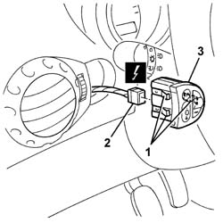

5560B56 TRIM with SWITCHES/BUTTONS FOR MULTIFUNCTION DISPLAY AND HEADLAMP alignment ADJUSTMENT - R.R.
- Path
- Procedures > 55 ELECTRICAL EQUIPMENT > 5560 INSTRUMENT PANEL > 5560B analogue control panel > 5560B56 TRIM with SWITCHES/BUTTONS FOR MULTIFUNCTION DISPLAY AND HEADLAMP alignment ADJUSTMENT - R.R.
- Kind
- repair procedure (removal / refitting; the operation number is the code)
- Applies to
- all engines; all production periods
- Interactive page
- https://sloeber94.github.io/elrnDB-a147/en/#/3025591
Applies to: all engines; all production periods
 Removing
Removing
 Refitting
Refitting1. Release the retainers for the switch panel from the dashboard trim.
2. Disconnect the electrical connections.
 | Name | Connector |
|---|---|---|
2 | Controls for headlamp alignment, instrument lighting adjustment |
3. Recover the switch panel.

Applies to: all engines; all production periods
Refitting
RemovingCheck that the switch unit is undamaged.
Connect the electrical connection
Fit the switch panel in the dashboard trim.
Check the devices are working properly.
Topics linked from this page (1)
Topics that link to this page (19)
- I80 HEADLAMP ALIGNMENT CORRECTOR NOT WORKING
- K06 TRIP METER DOES NOT ZERO
- K15 CLOCK NOT WORKING
- K91 INSTRUMENT LIGHTS / LIGHTING DIMMER NOT WORKING
- 3330D11 brake servo - r r including seperation from master cylinder - facia lining removed for rhd version
- 5020L10 additional heater system boiler - r r
- 5040A80 expansion/connection pipe - r r
- 5040B30 expansion valve (tube orifice) - r+r
- 5040C10 air conditioner box - r+r
- 5040C50 air conditioner heater radiator - r+r
- 5040C64 a/c evaporator - r+r
- 5040D76 air contitioner distribution flap control motor - r r
- 5040D84 air conditioner left hand air mixer flap control motor - r r
- 5040D86 air conditioner right hand air mixer flap control motor - r r
- 5040D90 air conditioner system wiring bundle - r r
- 5505C34 intergrated instrument under facia front air bag wiring - r r
- 5540C18 headlamp/light cluster alignment correction motor switch - r+r
- 7040A10 instrument facia trim - r+r
- 7040A97 facia trim support beam - r r